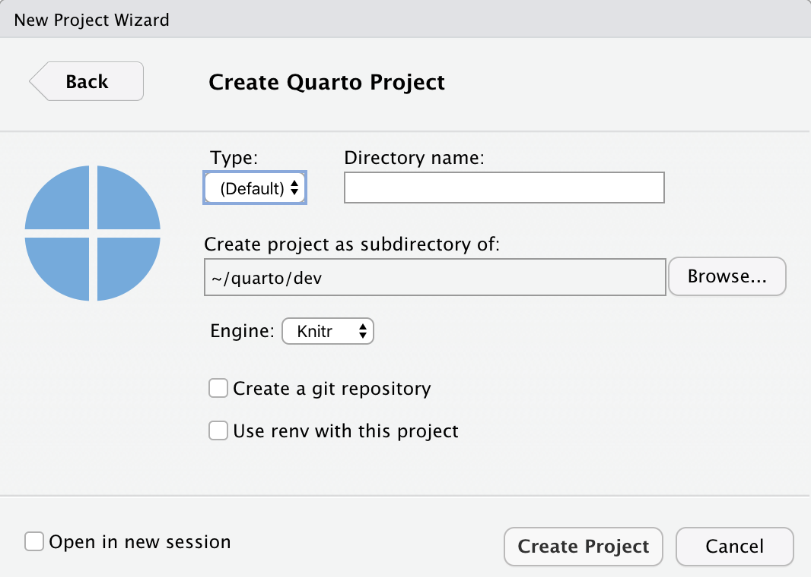

RStudio IDE
Overview
The currently daily build of RStudio (v2021-07.0.275 or higher) includes support for editing and preview of Quarto documents. This works for plain markdown as well as both the Knitr and Jupyter engines.
If you are using Quarto within RStudio it is strongly recommended that you use this version (the documentation below assumes you are using this build).
You can download the RStudio daily build from https://dailies.rstudio.com.
Creating Documents
Use the File : New File : Quarto Doc… command to create new Quarto documents:

Render and Preview
Use the Render button to preview documents as you edit them:

If you prefer to automatically render whenever you save you can check the Render on Save option on the editor toolbar.
The preview will appear alongside the editor:

The preview will update whenever you re-render the document. Side-by-side preview works for both HTML and PDF output.
Projects
If you want to create a new project for a Quarto document or set of documents, use the File : New Project… command, specify New Directory, then choose Quarto Project:

You can use this UI to create both vanilla projects as well as websites and books. Options are also provided for creating a git repository and initializing an renv environment for the project.
Knitr Engine
Quarto is designed to be highly compatible with existing R Markdown documents. You should generally be able to use Quarto to render any existing Rmd document without changes.
One important difference between R Markdown documents and Quarto documents is that in Quarto chunk options are typically included in special comments at the top of code chunks rather than within the line that begins the chunk. For example:
```{r}
#| echo: false
#| fig-cap: "Air Quality"
library(ggplot2)
ggplot(airquality, aes(Temp, Ozone)) +
geom_point() +
geom_smooth(method = "loess", se = FALSE)
```Quarto uses this approach to both better accommodate longer options like fig-cap, fig-subcap, and fig-alt as well as to make it straightforward to edit chunk options within more structured editors that don’t have an easy way to edit chunk metadata (e.g. most traditional notebook UIs).
Note that if you prefer it is still possible to include chunk options on the first line (e.g. ```{r, echo = FALSE}). That said, we recommend using the comment-based syntax to make documents more portable and consistent across execution engines.
Chunk options included this way use YAML syntax rather than R syntax for consistency with options provided in YAML front matter. You can still however use R code for option values by prefacing them with !expr. For example:
#| fig-cap: !expr paste("Air", "Quality")Jupyter Engine
You can also work with Quarto markdown documents that target the Jupyter engine within RStudio. These files will typically include a jupyter option in the YAML front matter indicating which kernel to use. For example:
---
title: "Matplotlib Demo"
author: "Norah Smith"
jupyter: python3
---If you want to work within a virtual environment (venv), use the File : New Project… command, specify the Jupyter engine with a venv, and specify which packages you’d like to seed the venv with:

RStudio will automatically activate this virtual environment whenever you open the project. You can install additional Python packages into the environment using the RStudio Terminal tab. For example:

R Package
If you are not using RStudio and/or you prefer to render from the R console, you can do so using the quarto R package. To install the R package:
install.packages("quarto")Then, to render a document:
library(quarto)
quarto_render("document.qmd")To live preview (automatically render & refresh the browser on save) for a document you are working on, use the quarto_preview() function:
library(quarto)
quarto_preview("document.qmd")If you working on a website or book project, you can run the Quarto development server with:
library(quarto)
quarto_serve()